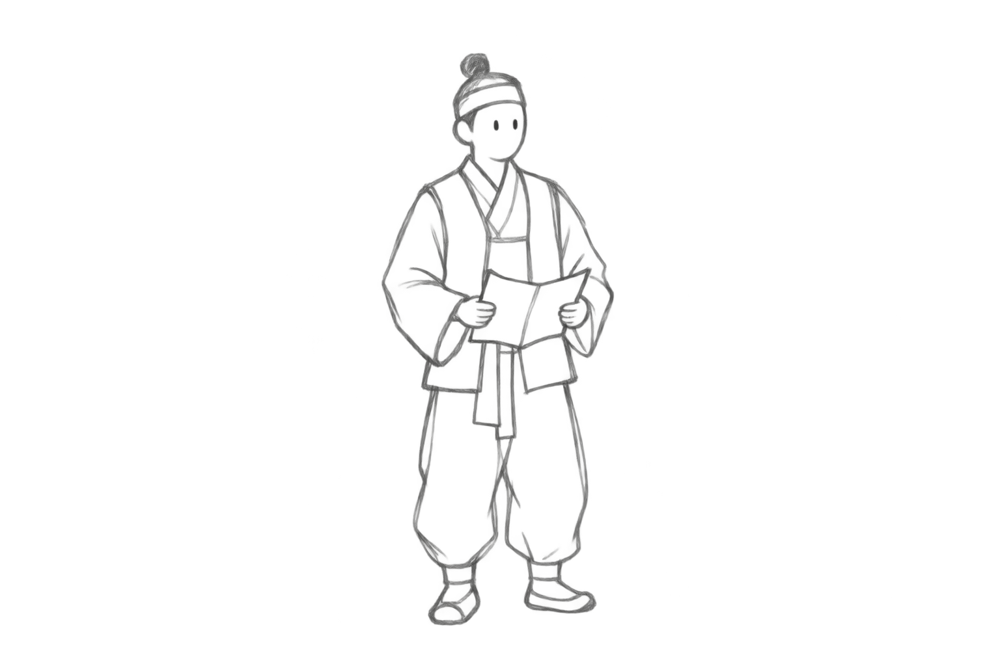

장사꾼
지게에 짐을 메고 장터를 오가는 장사꾼입니다.
제금루의 붉은 기둥 곁에서 인물을 가까이 바라봅니다.
장터에 가는 길에 제금루에서 들었는데, 당나라에 다녀온 사신 편에 사자라는 희귀한 짐승 한 쌍에 대한 소문이 파다하더이다. 수놈이 암놈보다 얼굴, 덩치도 훨씬 크고, 눈꼬리가 위로 팍 올라간 게 눈매가 어찌나 사나운지, 바로 달려들 것 같았다지 뭡니까.
스토리라인 · FINAL PLAN
돌에 새긴 선이 산과 마을의 풍경이 됩니다.
다섯 목소리를 따라 걷고, 이야기의 끝에서 두 석사자를 만납니다.
인물과 대사는 석사자의 형태를 바탕으로 구성한 팀의 창작 서사입니다.
어느 옛날, 공주목과 그 주변 고을에는 신비로운 두 사자의 이야기가 떠돌고 있습니다.
마을에 오신 것을 환영합니다. 길을 따라 걸으며 사람들이 전하는 두 사자의 이야기를 들어보세요.
사자의 선에 먹이 번지며 산의 윤곽으로 이어집니다.
안개 사이로 마을을 내려다보고, 입구를 향해 다가갑니다.
길을 따라 장사꾼에게 다가가며 시선이 인물에 모입니다.
두 사자의 덩치와 눈매에 관한 첫 소문을 듣습니다.
관아의 건물과 마당을 지나 농민을 만납니다.
흐릿하다 또렷해지는 얼굴과 이목구비를 떠올립니다.
시선이 객사 쪽으로 돌아서고, 찬모에게 향합니다.
익살스러운 얼굴과 꼬불꼬불한 갈기의 이야기를 듣습니다.
길의 방향을 바꾸어 주민 삼총사가 있는 곳으로 걷습니다.
웃는 입꼬리와 사방으로 뻗은 수염에 귀를 기울입니다.
마을을 뒤로하고 산길을 올라 나무꾼을 만납니다.
나이 든 목소리로 산등성이와 닮은 털의 결을 전합니다.
산에서 내려와, 소문으로만 듣던 두 사자 앞에 섭니다.
두 석사자 곁으로 계절과 시간이 흐르고, 현재의 풍경 속에 두 사자가 남습니다.
지게에 짐을 메고 장터를 오가는 장사꾼입니다.
제금루의 붉은 기둥 곁에서 인물을 가까이 바라봅니다.
장터에 가는 길에 제금루에서 들었는데, 당나라에 다녀온 사신 편에 사자라는 희귀한 짐승 한 쌍에 대한 소문이 파다하더이다. 수놈이 암놈보다 얼굴, 덩치도 훨씬 크고, 눈꼬리가 위로 팍 올라간 게 눈매가 어찌나 사나운지, 바로 달려들 것 같았다지 뭡니까.

문서를 품에 안고 관아를 찾은 농민입니다.
관아 건물을 배경으로 농민의 얼굴과 손에 시선을 둡니다.
어제 관아에서 일을 보고 돌아오는 길에 저도 그 희귀한 짐승 한 쌍에 대한 소문을 들었는데요. 한 놈의 얼굴이 흐릿하여 눈을 비비고 자세히 살펴보니, 이목구비와 얼굴 윤곽이 또렷하게 살아났다더군요. 금방이라도 말을 건넬 것 같은 모습이었답니다.
음식상을 들고 객사로 향하는 찬모입니다.
객사 마당에서 찬모와 마주합니다.
저도 객사에 음식을 하러 가는 길에 소문을 들었지요. 고것이 글쎄, 위엄 있고 익살스러운 얼굴에, 정수리의 꼬불꼬불한 갈기까지 한 올 한 올 날리는 것이 참으로 신통했다네요.
바구니·책·호리병을 지닌 세 주민이 서로 투닥거리며 집으로 돌아갑니다.
민가의 길 위에 세 사람을 함께 담습니다.
여느 때처럼 서로 투닥거리며 집에 돌아가는 길에 저도 그 희귀한 짐승에 대한 소문을 들었어요. 생생한 얼굴 표정에서 신비한 기운이 났다고 합니다. 입꼬리가 살짝 올라가 사람이 씩 웃는 것 같은 데다, 사방으로 쭉 뻗은 수염은 꼭 빛이 퍼져 나가는 듯했다지요.
장작을 지고 도끼를 든, 봉황산을 오가는 나무꾼입니다.
마을을 내려다보는 산에서 마지막 소문을 듣습니다.
어제 봉황산에 나무를 하러 갔는데, 동료 나무꾼이 그 희귀한 짐승에 대한 소문을 들려주더군요. 털 결이 꼭 산등성이 굽이처럼 선명하게 살아있는게, 산과 꼭 닮은 것이 꼭 산신의 사자가 내려온 것 같았다네요.